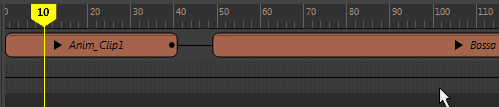
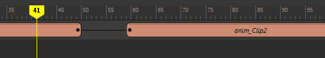
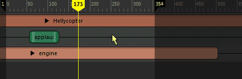
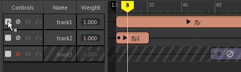

在 Maya 中创建和编辑带任何可设置对象的关键帧或属性的动画序列。
若要打开时间编辑器，请执行以下操作：
- 从 Maya 菜单栏中，选择“窗口 > 动画编辑器 > 时间编辑器”(Windows > Animation Editors > Time Editor)
时间编辑器是一款创建和编辑动画的综合工具。它结合了现有编辑器中的动画编辑工作流，为您提供基于片段的直观工作流，以便进行非线性动画编辑，使您能够在片段级别的视图和关键帧级别的细节之间轻松导航。
Maya 中可以设置关键帧的所有对象或属性均可作为片段（可通过非破坏性方式进行编辑）导入时间编辑器。时间编辑器定义动画的计时操作（例如，速度、长度、开始/停止时间等），以便尝试场景中元素的不同组合和变化。在时间编辑器中创建所需的动画版本后，可以对其进行烘焙，以便能够在 Maya 中使用新动画。
基本任务
下表简要概述了使用时间编辑器的各项任务：
| 目标 | 操作 |
|---|---|
|
将时间编辑器作为独立窗口打开 |
选择“窗口 > 动画编辑器 > 时间编辑器”(Windows > Animation Editors > Time Editor)。 |
|
将时间编辑器放置在场景视图中 |
选择要在其中显示时间编辑器的场景视图，然后选择“面板 > 面板 > 时间编辑器”(Panels > Panel > Time Editor)。 |
| 将动画添加到时间编辑器 |
将打开将动画添加到时间编辑器(Add animation to the Time Editor)窗口，用于为要创建的动画片段指定设置。 另请参见将内容添加到时间编辑器。 |
| 平移并放大时间编辑器 | 与在视口中相同：
|
| 拖动动画 | 拖动当前时间标记。
|
| 调整播放范围 | 在时间标尺上，单击暗区域的边并拖动以更改播放范围。通过拖动时间标尺上的标志，在时间视图中延伸播放范围。
 |
| 框显片段 |
|
| Crossfade 片段 | 将一个片段拖动到另一个片段上方，使其重叠。

请参见创建时间编辑器片段之间的过渡。 |
| 过渡片段 | 选择片段，在其上单击鼠标右键，然后从时间编辑器片段(Clip)上下文菜单中选择“创建过渡”(Create Transition)。

请参见创建时间编辑器片段之间的过渡。
|
| 组片段 | 拖动或按住 Shift 键并选择多个相同类型的片段，然后单击时间编辑器工具栏中的“分组”(Group)
 或按 Ctrl + G。 或按 Ctrl + G。
 |
| 剃掉片段 | 选择一个片段，将当前时间标记移动到所需的分割位置，然后选择时间编辑器工具栏中的  或按 W 键。 或按 W 键。

有关涟漪编辑的信息，请参见在时间编辑器中编辑动画。
|
| 将音频添加到时间编辑器
|
请参见将内容添加到时间编辑器。 |
| 在时间编辑器中编辑片段（分割、循环等）。 |
|
| 显示关键帧 | 在名单控件中单击父组或单个片段上的  （或按 V 键），可显示轨迹的动画关键帧。 （或按 V 键），可显示轨迹的动画关键帧。

这些关键帧显示为竖线。请参见在时间编辑器中设置动画关键帧。 |
| 展开层次 | 请单击片段名称旁边的箭头；要显示动画层次，请单击名单中的每个箭头以显示层次。
 |
| 在时间编辑器中更改轨迹播放（禁用、单放等） |
|
| 禁用“时间编辑器”(Time Editor)以编辑动画 | 单击时间编辑器工具栏中的“禁用时间编辑器”(Mute Time Editor)
 或按 Q 键。有关详细信息，请参见禁用时间编辑器。 或按 Q 键。有关详细信息，请参见禁用时间编辑器。
|